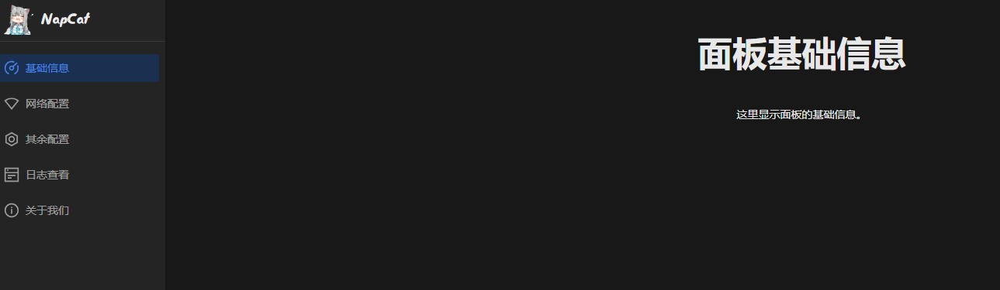

qq机器人配置二三事
看别人整的qq机器人挺有意思 所以自已搭一个玩玩
使用了napcat+nonebot的方式
记录基础安装/配置/踩坑过程 配件安装之后有事也会写在这里
安装
服务器是2核2G 一年份的阿里云服务器 用了学生优惠
一开始用的系统镜像是阿里云的Alibaba Cloud Linux 结果有些配置和官方的冲突了 遂作罢 改用Ubuntu
napcat和nonebot的安装没什么好说的 按照帮助文件运行命令即可
python有些全局安装由于安全考虑会不让你装 复制并输入回显中的强制安装选项即可
整个流程总结来说:
创建nonebot-启动napcat-在napcat上登陆想要实现机器人功能的qq-运行nonebot-ws反代配置成功-nonebot连接上napcat-nonebot开始监听napcat传输到的消息-nonebot根据自己的插件/配置做出反应-成功
创建nonebot时注意是空格选择 enter确认 最好安装自带的echo功能 方便测试
配置
要让这俩真正联动起效的话 得在napcat中设置反向ws
配置有两种方式:
1.留意启动日志里的形如 [WebUi] WebUi Local Panel Url: http://127.0.0.1:6099/webui?token=xxxx 的token信息
随后访问该网址（注意环境是否开放公网并自主修改ip）进入图形化页面
直接复制整个网址应该会自动传参 不用输入token
如果因为各种原因错过了token 可以在webui.json里找到 输入即可
网络配置-右上角添加配置
1 | 名称-不和别的重复就行 随意 |
2.直接通过修改安装目录中的./config/onebot11_xxxx.json文件来配置
1 | { |
首先是改名和状态改为启用
url改为ws://127.0.0.1:8080/onebot/v11/ws
这里的 8080 是 NoneBot 输出的端口号，/onebot/v11/ws 是 NoneBot onebot 适配器默认的路径
一般来说跳出这后三行 提示ws反代已成功连接 就没啥问题了
假如重复报403 那就是TOKEN的问题 需要另外设置 方法如上
测试的时候可以使用自带的echo功能 在群聊或者私聊输入（群聊里还需要@机器人） /echo [想让机器人说的话] 若成功回复则为成功
接下来去nonebot商店里找点插件自己安装吧
插件（先摸了）
结尾/引用
We are just another visitor in a transient world